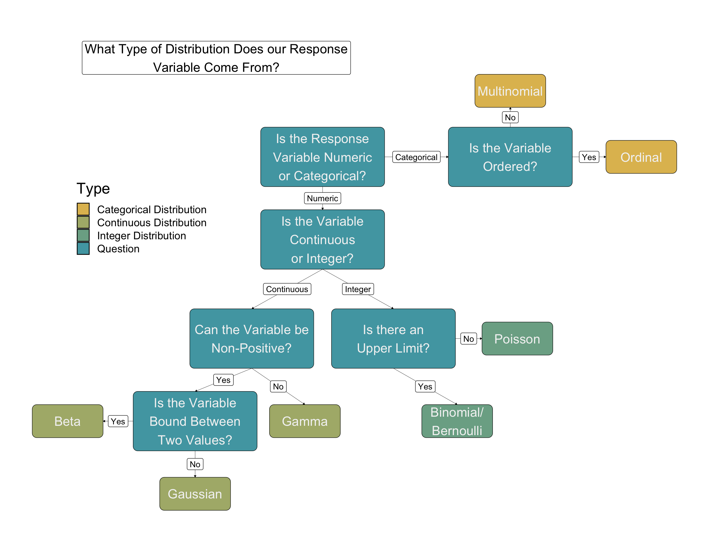
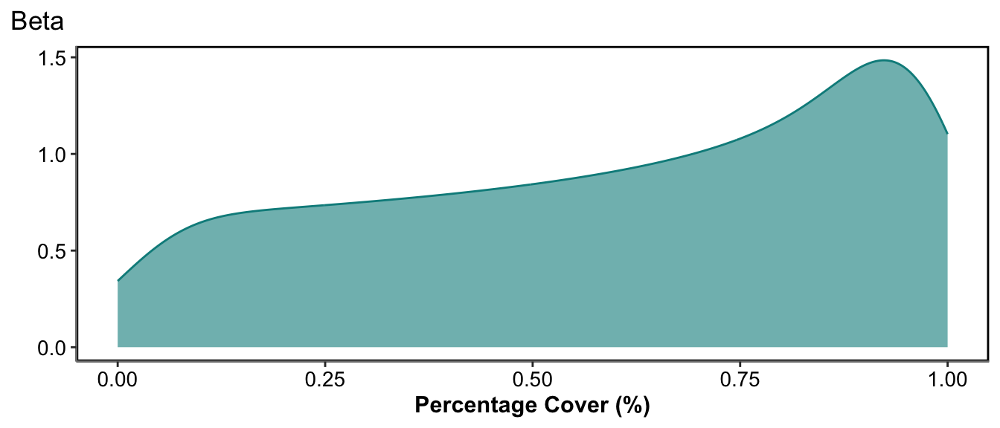
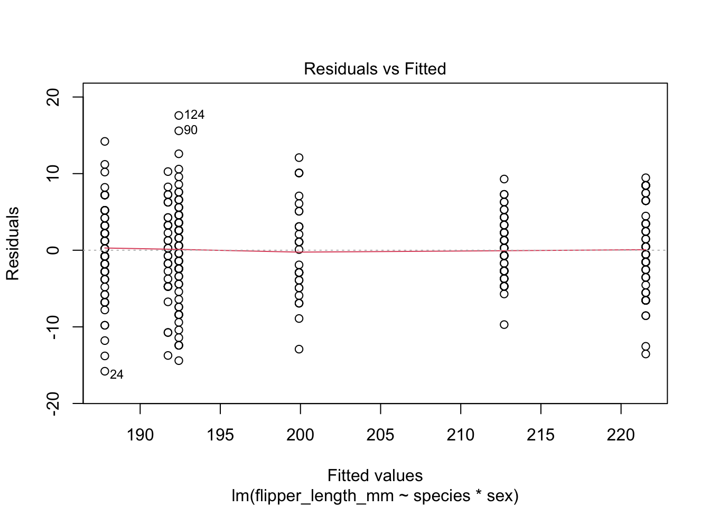
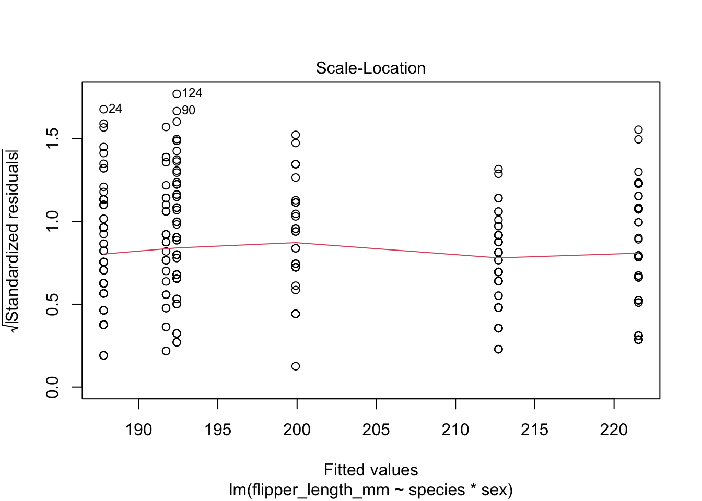
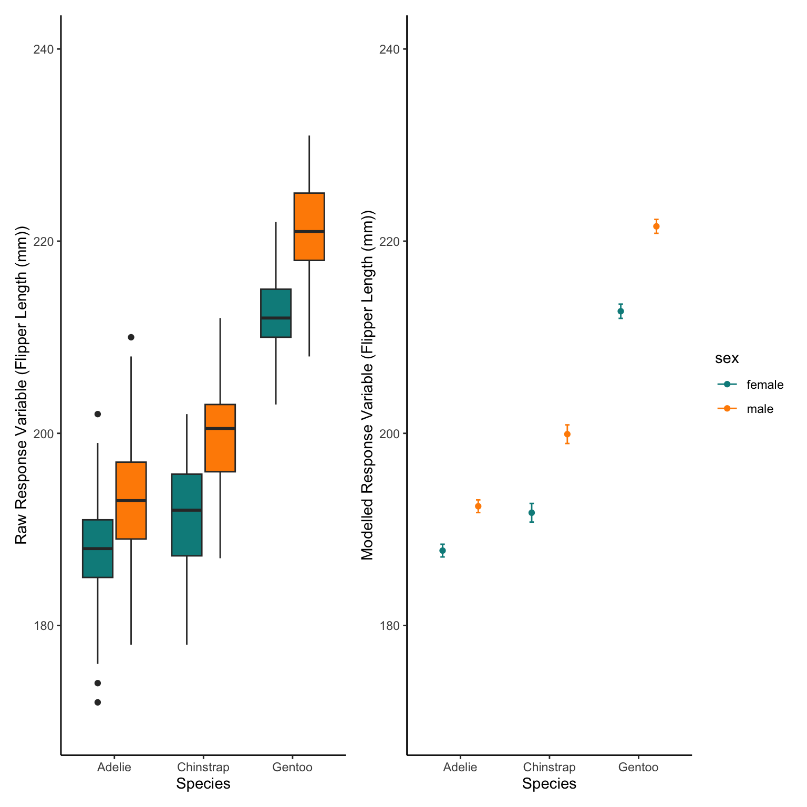

(General) Linear Models in R - Regression Analysis
GLMs - Background 
Statistical analysis in r is very easy (on the whole) but needs a bit more background to fully understand. But for most of our situations we will want to use a group of models called General Linear Models (GLMs) or if more complex General Linear Mixed Effects Models (GLMMs). These modelling frameworks plus the additions/alterations from their defaults have lots of different names but in ecology and specifically r the names here are the most commonly used.
Short and Probably Biased History
These modelling frameworks can be used to model almost all situations that will arise in our work. We are almost always using models to describe relationships. We can then use those models to predict future events but this is less common and more nuanced so we might use other tools for that.
In more traditional “Fischer” style statistics there are a wealth of different tests for each different scenario such as (t-test, ANOVA, Kruskal-Wallis, Friedman, Mann-Whitney-U etc.). These tests were created, designed and developed from work by a researcher called Fischer, with many ecologists/researchers generally holding onto this style as it has been used and taught for decades. However, they were designed and created for very specific cases. This means that they are extremely powerful and useful in those situations but are almost always used in slightly different situations or scenarios and so lose their power.

GLMs and GLMMs can be used in all the same cases as these older style tests as well as many many more, but with more consistency of terminology, higher flexibility and without the need to know, which different test to use.
There are important options to chose within GLMs and GLMMs but as I mention they are more consistent and easier to check or adhere to their assumptions.
First Step of Analysis - Statistical Model Formulation
Generally we will have a response variable (Dependent Variable) with one or more fixed effects (independent variables).
Here I will discuss exclusively univariate modelling (where only one variable is the response variable) but multivariate analysis could follow the same framework, it is just more complicated to implement.
Our research question will dictate how we create our scientific model, which dictates what statistical model to use and then how we interpret that statistical model.
Many researchers like to draw out what is called a DAG, which diagrammatically shows assumed influences of factors, and how the directionallity of that influence. At first these are quite difficult to formulate until you have created a few. Therefore, the easiest way I can think to do this is saying some sort of hypothesis or statement in English then we can turn that statement into the Statistical model.
For example: I hypothesise that the flipper length of a penguin is described primarily by the species of that penguin but also influenced by its sex. Effectively Flipper length changes with Species and Sex.

Here our response variable is Flipper length (Dependant variable) and our fixed effects (Independent variables) are Species and Sex.
In statistical notation we could write this in a couple of ways depending on our assumptions:
1). flipper_length_mm ~ sex * species
2). flipper_length_mm ~ sex + species
Firstly, we see on the left hand side of the ~ (tilde) we have our response variable, with our fixed effects on the other side.
Secondly, we see that we either multiply or add these fixed effects. The difference between the two is subtle but important.
Equation 1 is saying that flipper length is effected by species and by sexes but that the effect of sex is different depending on the species. (females always bigger in one species but males always bigger in another but one species is always much larger than the other).
Equation 2 is saying that flipper length is effected by species and by sexes but that the effect of sex is the same or similar regardless of the species. (males always bigger across all species, but sizes different across species).
We may think either equation is correct given our knowledge of penguins.
Second Step of Analysis - Response Variable Distribution
The next most important element is what type of data our response variable is. This is the step that is often carried out wrong and leads to many inaccuracies of analysis.
When modelling we are using our sample to make inference about a population. Therefore, our model should be based on our assumptions of the population that we took the sample from.
The type of data your response variable comes from may not be exactly what your response variable data looks like! However, if we have sufficiently sampled the population and not introduced any selection or sampling bias we should be confident in saying our sample (response variable) comes from the distribution of the population. We should be aware of this when analysing data from specific geographies or demographics etc!!!
So we should be able to tell the type of response variable data before we even collect the samples themselves! WE SHOULD NOT LOOK AT A GRAPH OF OUR DATA AND CHOOSE THE DISTRIBUTION IT COMES FROM JUST BY THE SHAPE!!!! (Speaking from experience and errors made!)
Distributions
There are a group of widely used distributions that will cover almost all situations.
They are:
Gaussian
Beta
Gamma
Poisson
Binomial/Bernoulli
There are many, many, many others such as Student-t or Direchlet or Tweedie. All of which are very useful and utilised throughout science but we won’t go through them here.

Which to Choose?
Numeric or Categorical
So when deciding what type of model to run we can first think whether our data are numerica or categoric. We will only discuss numerical data (temperature or weight or numbers of fish) but sometimes we might have a categorical response variable, such as questionnaire answers. Within these types of model there might be order to the categories (Not likely, Somewhat likely, Very likely) or there is no logical order (green, blue, purple). There are mixed effects models for these that are widely used, such as Multinomial Logisitic Regression for non-ordered and Ordinal Logistic Regression for ordered categorical response variables, but again we won’t discuss them here.
Numeric: Continuous or Integer
Once we know our data are numeric, we need to choose what type: continuous or integers. This is quite an easy one, can you measure it in decimals or is it complete units. When studying nesting birds we don’t count half eggs; a nest will have 1, 2, 3 etc. eggs. But if we are measuring the width of a tree it might be 4 cm or 2.365441 m.

Continuous: Can the data be Negative?
Once we know our data are continuous numeric, we can think can the values be negative? A response variable that is continuous and can be negative is mostly modelled under the most common distribution: Gaussian. Examples of this could be temperature measured in \(^\circ\)C or acceleration. A response variable that cannot be negative or even 0, would most correctly be: Gamma. However, Gaussian models are very often used for these models as a Guassian distribution is simpler computationally and mathematically, and only really causes issues when the values approach 0. This is actually most continuous values we measure, such as thickness of a stem, fish length, body mass or area of habitat.

Continuous: Are the data bound between two values?
If your response variable is continuous, and it may be negative or not, but is bound between an upper and lower known bound then it would most correctly be: Beta. For most practical terms Beta distribution is between 0 and 1. However, most data between bounds could be scaled to 0 and 1 and keep all of their characteristics. For example, percentage or proportional data are effectively between 0 and 1 and can be modelling using a Beta distribution.

Integer: Known upper limit or not?
We know our data are integers but do we know whether there is an upper limit? If our data could potentially be very big as counts then we will use the Poisson distribution. This is for response variables like number of eggs in a nest or abundance of fish or the number of different species found along a transect. If we know there is an upper limit to the integers we could get then we will use a Binomial model. This could be for the number of eggs inside a six egg carton. The most common version of this is when we have a binary response variable (either 1 or 0). Presence or absence of a rare species for example. This is binary Binomial but is sometimes referred to specifically as Bernoulli.

Third Step of Analysis - Organising Fixed Effects
We now know what distribution we will most likely use to analyse our response data, so the next step is organising our fixed effects so the model treats them how we would like them to be treated. Effectively fixed effects are either numeric or categorical variables. With GLMs there is no different name (nor changes in code) generally used for what combination of numeric or categorical variables are used. So we could have multiple numeric effects, multiple categorical factors or a mixture of both.
Numeric Fixed Effects
In r numeric effects are quite straight forward, “what is the effect on y with a one unit change of value of x?”. However, if our numeric column has really big values, big range and a skewed distribution we may have issues with our model not working or running as we expect. For fixed effects this is easy to overcome, generally we would use some sort of transformation that maintains the structure of the data but minimises the issues the model runs into.
- Skewed Data
For example for skewed data, if our fixed effect was based on population size with the nearest 2 km, we may have some seriously big values in cities and seriously small values in the countryside. For these data we may use a log transformation, or a square root.

- Overly Large Data
If our fixed effect was a really big value but actually we are interested in small changes we might consider it differently. For example we might look at Year, in our data that would be above 2000 generally but actually if we have 5 years of data we are looking at it would be easier for the model to convert our data to year 1, year 2, year 2 rather than 2020, 2021, 2022. Here we maintain the difference of 1 year between each value so change the scale.

- Awkwardly Placed but ‘Nicely’ Distributed Data
Sometimes we may have a distribution of values that is ‘nicely’ distributed, with a clear mean, most values centered on that mean with less values further away from that mean. But if that mean is quite large, or really really small, or really really negative we may have issues with models not working correctly. This can also occur when we have more than one fixed effect and they are on very different scales. For example, body measurements as fixed effects where one body measurement is on the scale of metres and another is millimetres. For these we can centered and scale, sometimes call normalise, our effect by subtracting the mean from every value and dividing by the standard deviation.
Categorical Fixed Effects
Categorical factors can be less simple. R takes the first level of the categorical effect as the baseline or reference state, then compares all others to that one reference level. If you only have two levels then that is fine, the model will tell you the effect of changing from state 1 to state 2. This is directional. However, with more than two levels the results in r will only tell you the pairwise comparisons from state 1 to state 2, state 1 to state 3, state 1 to state 4 …. state 1 to state n. This is harder to interpret in the results table but if you plot the model it becomes easy. It does mean that we can make sure if there is a control or base level in our factor we can use that as our reference level. This is done by ordering our column so that our desired base level is first in the column. If the column is a character style data r will use the first level alphabetically as our reference data. Sometimes we won’t care though, we just have to be aware that it is happening.
Fourth Step of Analysis - Assessing Model Functioning
GLM/GLMM Assumptions
GLMs and GLMMs have some broad assumptions for them to be appropriately used. Regardless of the distribution type an Independence of sample is assumed as well as homoscedasticity and normality of residuals is assumed.
If we have created an appropriate statistical model that takes into consideration the heirarchy/structure of the data our samples should be independent.
So what are residuals and what is homoscedasticity?
Homoscedasticity of Residuals - Fitted vs Residuals Plot
To assess the assumptions of our models we can look at the residual distance between the model line and the points, these are called the residuals of the model.
In its most basic version the residuals are the distance between the model and the raw data, then the plot of those residuals against the fitted values (or our response variable) can show how the sizes of residuals change across the fitted values. Homoscedasticity means homogeneity of variance or that the variance is consistent across the whole range of data. Therefore, ideally we want the residuals to represent a cloud of points with no clear patterns across the range of the response variable (fitted values), this is very subjective but a useful qualitative assessment of how good our model is. If our model was missing a clear pattern in the raw data then we would see a clear pattern in the residuals.
If we see patterns in our Response Variable vs Residuals plots (not just a random cloud of points) this may mean we missed an important fixed effect in our model (Underlying structure of the system has been ignored), the data do not come from the assigned distribution, there are a high number of zeros in our data or the data do come from the correct distribution but we have been biased in our sampling method (There could be many other reasons but these are the main ones).

Normality of Residuals - Quantile-Quantile Plot
For the vast majority of GLM and GLMMs, there is an assumption that our residuals are normally distributed. Basically this means that our residuals have a mean distance from the model and most of the values are around this mean. Then the likelihood or probability of having much larger or much smaller values than the mean becomes smaller and smaller. We can therefore plot our residuals as a histogram to see if it follows a generally normal or bell shaped distribution. We can also do what is called a Quantile-Quantile plot, which creates a theoretical distribution of values given the data range, then plots it against the empirical or true distribution. If the residual distribution are perfectly the same as the theoretical distribution it follows a 1 to 1 line (y=x). Again these are more qualitative checks where some variation and divergence from normality is fine.

Gaussian GLM
As before lets use the Palmer penguins dataset and remove the NAs (as before NAs should never be remove without considering why they are NAs but here we will remove them for ease).
#install.packages("palmerpenguins")
library(tidyverse)
library(palmerpenguins)
data(penguins)
penguins_noNAs<-penguins%>%
drop_na()Modelling with Categorical Predictor Variables
So now we will try prove the obvious
Does the flipper length of penguins change between species and between sexes
Whether we use an interaction or not depends on if our scientific thought
believes the relationship of Species to flipper length is different between sexes (sexual dimorphism may not be consistent across species)
lm2.1<-lm(flipper_length_mm~species*sex,data=penguins_noNAs)We could apply a linear model to almost all data but often it will not meet our assumptions,
We can now check visually the residuals from our model
The Residuals vs Fitted data plot we want the data be evenly spread from right to left, meaning the difference between the model and the data (residuals) are not generally larger or smaller at higher values of the model.
The next important plot is the qq plot, this is best if the points follow line of x=y which is the dotted line behind the points
The next two plots are less important generally but can be used to find out what is wrong if the first two plots are not as we want them
plot(lm2.1)



This is annoying as we have to press enter in the console to see all the plots
We will install some packages from the easystats ecosystem of packages for this. There are other packages we could also use for this (including one of my own) but the performance package is good
It displays the plots all together and gives hints of what you should look for in each plot
#install.packages("performance")
library(performance)
check_model(lm2.1)
As we only have factors in our model we don’t see a ‘cloud’ of points, but the line is still flat and horizontal so this is good
As the diagnostics are good we can look at the results
summary(lm2.1)
Call:
lm(formula = flipper_length_mm ~ species * sex, data = penguins_noNAs)
Residuals:
Min 1Q Median 3Q Max
-15.7945 -3.4110 0.0882 3.4590 17.5890
Coefficients:
Estimate Std. Error t value Pr(>|t|)
(Intercept) 187.7945 0.6619 283.721 < 2e-16 ***
speciesChinstrap 3.9408 1.1742 3.356 0.000884 ***
speciesGentoo 24.9124 0.9947 25.044 < 2e-16 ***
sexmale 4.6164 0.9361 4.932 1.3e-06 ***
speciesChinstrap:sexmale 3.5600 1.6606 2.144 0.032782 *
speciesGentoo:sexmale 4.2176 1.3971 3.019 0.002737 **
---
Signif. codes: 0 '***' 0.001 '**' 0.01 '*' 0.05 '.' 0.1 ' ' 1
Residual standard error: 5.655 on 327 degrees of freedom
Multiple R-squared: 0.8396, Adjusted R-squared: 0.8372
F-statistic: 342.4 on 5 and 327 DF, p-value: < 2.2e-16Okay there are a lot of numbers here but what does it actually mean,
I find the best way to interpret a model output is to plot the model results
First lets replot the raw data, boxplots are probably the best for categorical factors
We can re-use some of our code from the intro for appearance and colours
ggplot(penguins_noNAs)+
geom_boxplot(aes(x=species,y=flipper_length_mm,fill=sex))+
scale_fill_manual(values=c("darkcyan","darkorange"))+
labs(x="Species",y="Response Variable (Flipper Length (mm))")+
theme_classic()
Now we can also see what the model believes about our data
This should be similar to our raw data but not identical
To do this we make simulated raw data with this same predictor variables in
We then use the model to predict the response variable based on those predictor variables
Therefore, we make a data set with just sex and species the same as our original data (be careful of spelling and capitalisation, R wants it identical)
The model then predicts the average Flipper length in mm based on those species and sexes.
We can also tell the Predict function to predict error (Standard Error here)
NewData<-expand.grid(sex=c("female","male"),
species=c("Adelie","Chinstrap","Gentoo"))
Pred<-predict(lm2.1,NewData,se.fit=TRUE)
NewData$response<-Pred$fit
NewData$se.fit<-Pred$se.fit
ggplot(NewData)+
geom_point(aes(x=species,y=response,colour=sex),
position=position_dodge(0.8))+
geom_errorbar(aes(x=species,ymax=response+se.fit,
ymin=response-se.fit,colour=sex),
width=0.1,
position=position_dodge(0.8))+
scale_colour_manual(values=c("darkcyan","darkorange"))+
labs(x="Species",y="Response Variable (Flipper Length (mm))")+
theme_classic()
Lets look at both of these plots next to each other,
The best way to do this (in my opinion) is using the patchwork package that can combine the plots
First we save both the raw data boxplot as one object and the predicted plot as another then we plot them side by side
#install.packages("patchwork")
library(patchwork)
Plot1<-ggplot(penguins_noNAs)+
geom_boxplot(aes(x=species,y=flipper_length_mm,fill=sex))+
scale_fill_manual(values=c("darkcyan","darkorange"))+
labs(x="Species",y="Raw Response Variable (Flipper Length (mm))")+
theme_classic()+
theme(legend.position = "none")
Plot2<-ggplot(NewData)+
geom_point(aes(x=species,y=response,colour=sex),
position=position_dodge(0.8))+
geom_errorbar(aes(x=species,ymax=response+se.fit,
ymin=response-se.fit,colour=sex),
width=0.1,
position=position_dodge(0.8))+
scale_colour_manual(values=c("darkcyan","darkorange"))+
labs(x="Species",y="Modelled Response Variable (Flipper Length (mm))")+
theme_classic()
Plot1+Plot2
At first look this is quite good, but maybe some polishing is needed, mostly the y axis range
There are multiple ways to change this for example setting them both to the same range with scale_y_continuous()
#install.packages("patchwork")
library(patchwork)
Plot1<-ggplot(penguins_noNAs)+
geom_boxplot(aes(x=species,y=flipper_length_mm,fill=sex))+
scale_fill_manual(values=c("darkcyan","darkorange"))+
labs(x="Species",y="Raw Response Variable (Flipper Length (mm))")+
theme_classic()+
scale_y_continuous(limits=c(170,240))+
theme(legend.position = "none")
Plot2<-ggplot(NewData)+
geom_point(aes(x=species,y=response,colour=sex),
position=position_dodge(0.8))+
geom_errorbar(aes(x=species,ymax=response+se.fit,
ymin=response-se.fit,colour=sex),
width=0.1,
position=position_dodge(0.8))+
scale_colour_manual(values=c("darkcyan","darkorange"))+
labs(x="Species",y="Modelled Response Variable (Flipper Length (mm))")+
scale_y_continuous(limits=c(170,240))+
theme_classic()
Plot1+Plot2
This is better, although we could actually plot both the modelled and raw data on one plot
We can use a position=position_jitterdodge() to have the raw data not all in one line above their species
ggplot(NewData)+
geom_point(aes(x=species,y=response,colour=sex),
position=position_dodge(0.8))+
geom_errorbar(aes(x=species,ymax=response+se.fit,
ymin=response-se.fit,colour=sex),
width=0.1,
position=position_dodge(0.8))+
geom_point(data=penguins_noNAs,aes(x=species,
y=flipper_length_mm,
colour=sex),
position=position_jitterdodge(jitter.width = 0.4,
dodge.width = 0.8),
alpha=0.3,
size=0.5)+
scale_colour_manual(values=c("darkcyan","darkorange"))+
labs(x="Species",y="Response Variable (Flipper Length (mm))")+
theme_classic()
Modelling Continuous Predictor Variables
Okay that is what we do with linear models of categorical factors
But what if we want to see the relationship between flipper_length_mm and bill_length_mm
But we know there are species differences and sexual differences in flipper length
As Males always tend to be larger lets just assess species differences in their flipper to bill relationship
Lets plot the raw data first
ggplot(penguins_noNAs)+
geom_point(aes(x=bill_length_mm,y=flipper_length_mm,colour=species))+
scale_colour_manual(values=c("darkcyan","darkorange","grey30"))+
labs(x="Bill Length (mm)",y="Flipper Length (mm)")+
theme_classic()
We can see from the raw data that we will expect to find some strong linear relationships
lm3.1<-lm(flipper_length_mm~species*bill_length_mm,data=penguins_noNAs)
check_model(lm3.1)Model has interaction terms. VIFs might be inflated.
You may check multicollinearity among predictors of a model without
interaction terms.
summary(lm3.1)
Call:
lm(formula = flipper_length_mm ~ species * bill_length_mm, data = penguins_noNAs)
Residuals:
Min 1Q Median 3Q Max
-24.0561 -3.2927 -0.1646 3.5212 16.2890
Coefficients:
Estimate Std. Error t value Pr(>|t|)
(Intercept) 158.5047 7.0383 22.520 < 2e-16 ***
speciesChinstrap -11.8689 12.5448 -0.946 0.3448
speciesGentoo -8.2555 10.8008 -0.764 0.4452
bill_length_mm 0.8139 0.1809 4.500 9.46e-06 ***
speciesChinstrap:bill_length_mm 0.1934 0.2788 0.694 0.4884
speciesGentoo:bill_length_mm 0.5943 0.2495 2.382 0.0178 *
---
Signif. codes: 0 '***' 0.001 '**' 0.01 '*' 0.05 '.' 0.1 ' ' 1
Residual standard error: 5.799 on 327 degrees of freedom
Multiple R-squared: 0.8314, Adjusted R-squared: 0.8288
F-statistic: 322.5 on 5 and 327 DF, p-value: < 2.2e-16As we hypothesised before modelling that there would be different bill to flipper relationships between species
The interaction model follows our scientific assumptions
Therefore, it would be incorrect to use lower complexity models (without the interaction for example)
To predict again we want to create lines for each species
To do this we want to create fake bill length data over the same range for each species
Here we will use the seq() function again that creates a sequence of values from your first number to your last number
And you can chose the length of the vector it creates or the distance between each individual value
NewData_<-expand.grid(bill_length_mm=seq(from=min(penguins_noNAs$bill_length_mm),
to=max(penguins_noNAs$bill_length_mm),
length.out=1000),
species=c("Adelie","Chinstrap","Gentoo"))As the different species won’t be across all of these bill length ranges
We should also remove values outside of each species range
There would be many ways to do it, here we will use multiple dplyr functions together
This is where having the pip function helps keep the order of functions that are applied clear
First we create a df for each Species with their max and min bill lengths
Then we use case_when (a more sophisticated version of if_else()) to create a new column in our new df that either says Good or it will have NAs
We then filter all rows that have NAs in them, thus removing bill lengths outside of each species’ range.
Gentoo_Range<-penguins_noNAs %>%
filter(species=="Gentoo") %>%
summarise(min=min(bill_length_mm),
max=max(bill_length_mm))
Adelie_Range<-penguins_noNAs %>%
filter(species=="Adelie") %>%
summarise(min=min(bill_length_mm),
max=max(bill_length_mm))
Chinstrap_Range<-penguins_noNAs %>%
filter(species=="Chinstrap") %>%
summarise(min=min(bill_length_mm),
max=max(bill_length_mm))
NewData_2<-NewData_ %>%
mutate(Range=case_when(species=="Gentoo" &
bill_length_mm>=Gentoo_Range$min &
bill_length_mm<=Gentoo_Range$max~"Good",
species=="Adelie" &
bill_length_mm>=Adelie_Range$min &
bill_length_mm<=Adelie_Range$max~"Good",
species=="Chinstrap" &
bill_length_mm>=Chinstrap_Range$min &
bill_length_mm<=Chinstrap_Range$max~"Good"
)) %>%
filter(!Range%in%NA) %>%
select(-Range)After bad range values are filtered out we use the select function to remove the “Range” column, we do this with the - operator.
Pred_2<-predict(lm3.1,NewData_2,se.fit=TRUE)
NewData_2$response<-Pred_2$fit
NewData_2$se.fit<-Pred_2$se.fitSo now we have many data points that can be used to draw the linear model outputs
ggplot()+
geom_ribbon(data=NewData_2,mapping=aes(x=bill_length_mm,ymax=response+se.fit,
ymin=response-se.fit,fill=species),
alpha=0.4)+
geom_line(data=NewData_2,mapping=aes(x=bill_length_mm,y=response,colour=species),
alpha=0.4)+
scale_color_manual(values=c("darkcyan","darkorange","grey30"))+
scale_fill_manual(values=c("darkcyan","darkorange","grey30"))+
labs(x="Bill Length (mm)",y="Response Variable (Flipper Length (mm))")+
theme_classic()
This looks good but lets maybe add the raw data values onto the same figure as the model outputs as before
ggplot()+
geom_point(data=penguins_noNAs,mapping = aes(x=bill_length_mm,
y=flipper_length_mm,
colour=species),
alpha=0.4,size=0.8)+
geom_ribbon(data=NewData_2,mapping=aes(x=bill_length_mm,ymax=response+se.fit,
ymin=response-se.fit,fill=species),
alpha=0.4)+
geom_line(data=NewData_2,mapping=aes(x=bill_length_mm,y=response,colour=species),
alpha=0.4)+
scale_color_manual(values=c("darkcyan","darkorange","grey30"))+
scale_fill_manual(values=c("darkcyan","darkorange","grey30"))+
labs(x="Bill Length (mm)",y="Response Variable (Flipper Length (mm))")+
theme_classic()Artwork of Penguins by @allison_horst